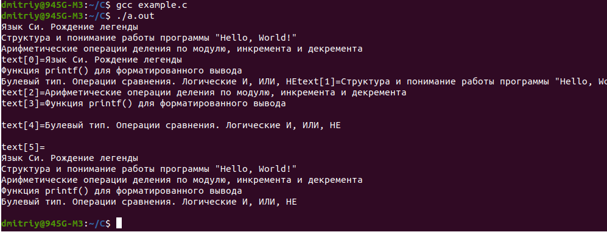

Тип данных struct
Продолжите программу, в которой объявляется структура с идентификатором tag_vector и целочисленными полями x, y, z типа short. В функции main объявите переменную этой структуры с именем vector. Заполните поля x, y, z значениями, прочитанными из входного потока, идущими в одну строчку через пробел.
Моё:
#include <stdio.h>
struct tag_vector { //объявили структуру
short x;
short y;
short z;
};
int main(void)
{
struct tag_vector vector; //объявили переменную структуры
scanf("%d %d %d", &vector.x, &vector.y, &vector.z); //читаем и сразу записываем в поля переменной vector
return 0;
}
|
------------------------------------------------------------------------------------------------------------------------В функции main объявите две переменные tm1 и tm2 структуры tag_time. Значения их полей (шесть целых неотрицательных чисел, записанных в одну строчку через пробел) прочитайте из входного потока. Объявите еще одну переменную tm_sum структуры tag_time, поля которой должны содержать сумму времен переменных tm1 и tm2. Время нужно складывать так, чтобы минуты и секунды не выходили из пределов [0; 59]. Выведите в консоль полученное время tm_sum в формате: hh:mm:ss
(Обратите внимание на наличие незначащего нуля перед числами меньше 10). Sample Input: 12 45 16 4 23 48
Sample Output: 17:09:04
Моё:
#include <stdio.h>
struct tag_time {
unsigned char hours;
unsigned char minutes;
unsigned char seconds;
};
int main(void)
{
// здесь продолжайте программу
int tmp = 0;
struct tag_time tm1;
struct tag_time tm2;
scanf("%hhu %hhu %hhu %hhu %hhu %hhu", &tm1.hours, &tm1.minutes, &tm1.seconds, &tm2.hours, &tm2.minutes, &tm2.seconds);
struct tag_time tm_sum;
tm_sum.seconds = tm1.seconds + tm2.seconds;
if(tm_sum.seconds > 59)
{
tm_sum.seconds -=60;
tmp = 1;
}
tm_sum.minutes = tm1.minutes + tm2.minutes + tmp;
if(tm_sum.minutes > 59)
{
tm_sum.minutes -=60;
tmp = 1;
}
tm_sum.hours = tm1.hours + tm2.hours + tmp;
printf("%02d:%02d:%02d\n", tm_sum.hours, tm_sum.minutes, tm_sum.seconds); //char автоматически приводится к типу int
return 0;
}
|
1. printf("%2d:%02d:%02d\n", tm_sum.hours, tm_sum.minutes, tm_sum.seconds);
Здесь числа типа char автоматически приводятся к типу int, потому обычный спецификатор %d для целых чисел.
%2d - здесь выводимое число будет состоять из двух цифр, если 1 цифра, то дополняться будет 0.
2. scanf("%hhu %hhu %hhu %hhu %hhu %hhu", &tm1.hour
Здесь %hhu - спецификатор для чтения чисел в формате unsigned char.
---------------------------------------------------------------------------------------------------------------------------Применение typedef к типу struct, передача struct через параметры функции и return структуры, копирование одной структуры в другую
Объявите функцию с именем complex_sum и двумя параметрами, через которые передаются (с копированием) две структуры типа COMPLEX. Функция complex_sum должна складывать переданные комплексные числа по формуле: a + j*b = (a1 + a2) + j * (b1 + b2) где j - мнимая единица (формально в структуре отсутствует). То есть, складываются отдельно действительные части (re) и мнимые (im) и записываются в новую созданную структуру типа COMPLEX внутри тела функции complex_sum. После сложения функция complex_sum должна возвращать сформированную структуру (через копирование).
В функции main объявите две переменные cmp_1, cmp_2 типа COMPLEX. Прочитайте из входного потока четыре вещественных числа, записанных в одну строчку через запятую. Первые два числа в порядке re, im сохраните в первой переменной cmp_1, а вторые два числа в том же порядке - во второй переменной cmp_2. Вызовите функцию complex_sum для сложения чисел cmp_1, cmp_2. Результат сохраните в переменной res типа COMPLEX. В консоль ничего выводить не нужно.
Sample Input: 0.1, 0.2, -0.5, 4.6
Моё:
#include <stdio.h>
typedef struct {
double re; // действительная часть
double im; // мнимая часть
} COMPLEX; //присвоили имя типу struct
COMPLEX complex_sum(COMPLEX var1, COMPLEX var2) //параметры и возврат являются struct
{
COMPLEX var3;
var3.re = var1.re + var2.re; //можно короче: COMPLEX var3 = {var1.re + var2.re, var1.im + var2.im};
var3.im = var1.im + var2.im;
return var3;
}
int main(void)
{
COMPLEX cmp_1, cmp_2, res;
scanf("%lf %lf %lf %lf", &cmp_1.re, &cmp_1.im, &cmp_2.re, &cmp_2.im);
res = complex_sum(cmp_1, cmp_2);
return 0;
}
|
--------------------------------------------------------------------------------------------------------------------------typedef, указатели на структуры как параметры функции
Объявите в программе структуру с полями x, y типа int и определите для нее тип POINT.
Объявите функцию с именем rect_square и двумя параметрами в виде указателей, через которые передаются структуры типа POINT. Функция rect_square должна вычислять площадь прямоугольника, заданного двумя точками (типа POINT): верхнего левого угла и нижнего правого. Вычисленное значение возвращается функцией rect_square в виде целого числа.
В функции main прочитайте из входного потока четыре целых числа, записанных в одну строчку через пробел, и сохраните их в двух переменных типа POINT в порядке x0, y0, x1, y1. Вызовите функцию rect_square для сформированных точек (структур POINT) и выведите в консоль возвращенное функцией значение в виде одного целого числа.
Sample Input: 8 11 18 44
Sample Output: 330
Моё:
#include <stdio.h>
typedef struct point{
int x, y;} POINT;
int rect_square(POINT *point1, POINT *point2)
{
return (point2->x - point1->x) * (point2->y - point1->y);
}
int main(void)
{
POINT point1, point2;
scanf("%d %d %d %d", &point1.x, &point1.y, &point2.x, &point2.y);
printf("%d\n", rect_square(&point1, &point2)); //поскольку передаем указатели, перед структурами ставим & (типа адрес передаем)
return 0;
}
|
--------------------------------------------------------------------------------------------------------------------------typedef, массив типа struct, этот массив в качестве параметра функции, return структуры
Объявите в программе структуру с полями x, y типа int и определите для нее тип POINT. Объявите функцию с именем get_means и двумя параметрами (порядок важен):
одномерным массивом структур POINT;
длиной (числом элементов) этого массива (тип size_t).
Функция get_means должна вычислять два средних арифметических числа: отдельно для первой координаты x и отдельно для второй координаты y. Вычисленные вещественные значения сохранить в структуре типа DATA (объявить до функции), которая содержит два поля: mean_x и mean_y типа double. Функция get_means должна возвращать сформированную структуру DATA.
В функции main объявите массив points структур POINT длиной 20 элементов. Прочитайте из входного потока целые числа x0, y0, x1, y1, ..., записанные в одну строчку через пробел. Максимальное число пар чисел не превышает 20, но может быть и меньше. Вызовите функцию get_means для вычисления средних только для актуальных элементов массива points (тех, в которых хранятся данные из входного потока, а не все 20). Возвращенные значения вывести в консоль в одну строчку через пробел с точностью до сотых.
Sample Input: 5 7 21 14 11 54 -25 -11 -10 15
Sample Output: 0.40 15.80
Моё:
#include <stdio.h>
typedef struct point{int x, y;} POINT;
typedef struct {double mean_x, mean_y;} DATA;
DATA data;
DATA get_means(POINT arr[], size_t length)
{
double summa_x = 0, summa_y = 0;
for (int i = 0; i < length; i++)
{
summa_x +=arr[i].x;
summa_y +=arr[i].y;
}
summa_x /=length;
summa_y /=length;
return DATA {summa_x, summa_y}; //error: expected expression before ‘DATA’
//return (DATA) {summa_x, summa_y}; //только так возвращать struct (тип заключать в скобки)
}
int main(void)
{
int count = 0;
POINT points[20] = {}; //заполняем нулями
for (; count < 20 && scanf("%d %d", &points[count].x, &points[count].y) == 2; count++){}
data = get_means(points, count);
//printf("%.2f %.2f\n", get_means(points, count).mean_x, get_means(points, count).mean_y); //2 раза вызываем функцию
printf("%.2f %.2f\n", data.mean_x, data.mean_y);
return 0;
}
|
warning: no semicolon at end of struct or union
14 | typedef struct {double mean_x, mean_y} DATA;
Не поставил точку с запятой перед закрывающей фигурной скобкой.
--------------------------------------------------------------------------------------------------------------------------Пример реализации стека:
# include <stdio.h>
#include <stdlib.h>
typedef struct tag_obj {
int data;
struct tag_obj* next; //структура объекта стека, содержит данные data и указатель на следующий объект
} OBJ;
/*
Функция для добавления нового объекта
В качестве параметров она принимает указатель на вершину стека и данные, которые нужно сохранить в добавляемом элементе.
В теле функции сначала создается новый объект для структуры; в поле data сохраняется переданное значение; указателю next
присваивается значение адреса указателя top (так как мы добавляем объект на верх стека); возвращаем адрес нового
созданного объекта (вершины стека).
*/
OBJ* push(OBJ* top, int data)
{
OBJ* ptr = malloc(sizeof(OBJ)); //выделяем память под новый объект
printf("adress ptr=%u\n", ptr);
printf("adress ptr=%u\n", ptr);
//printf("sizeof(OBJ)=%ld\n", sizeof(OBJ)); почему 16 байт? 4 байта под int, а 12 откуда?
ptr->data = data;
ptr->next = top;
printf("ptr.next=%u\n", ptr->next);
printf("ptr.next=%s\n", ptr->next);
return ptr;
}
/*
Функция удаления самого верхнего объекта из стека
передаем указатель на вершину стека и далее проверяем, если указатель равен NULL, значит, стек пуст и
удалять нечего, завершаем функцию. Если же объекты есть, то создаем временный указатель ptr_next на
следующий объект стека и освобождаем память из под текущего верхнего объекта. В конце возвращаем
адрес следующего (но теперь верхнего) элемента стека.
*/
OBJ* pop(OBJ* top)
{
if(top == NULL)
return top;
printf("Deleted: %d\n", top->data);
OBJ* ptr_next = top->next;
free(top);
return ptr_next;
}
/*
Функция перебора объектов
Для этого реализован цикл while, пока мы не дойдем до последнего элемента, адрес которого равен NULL.
В цикле выполняется отображение поля data текущего объекта и переход к следующему, используя указатель next.
*/
void show_stack(const OBJ* top)
{
const OBJ* current = top;
while(current != NULL) {
printf("%d\n", current->data);
current = current->next;
}
}
int main(void)
{
OBJ* top = NULL;
top = push(top, 1);
top = push(top, 2);
top = push(top, 3);
top = push(top, 4);
show_stack(top);
while(top)
top = pop(top);
return 0;
}
|
Вначале формируется стек из четырех элементов, затем отображается сверху-вниз и в конце освобождается память из под всех элементов стека. После запуска программы увидим результат:
4 3 2 1 Deleted: 4 Deleted: 3 Deleted: 2 Deleted: 1То есть, были созданы, а потом удалены все четыре объекта стека.
----------------------------------------------------------------------------------------------------------------------------Еще одна подобная задача:
Необходимо написать программу, которая в стеке хранит историю посещения пользователем веб-страниц (URL-адреса страниц). Для этого необходимо повторить реализацию стека, приведенного в занятии (или написать свою собственную), со следующим функционалом:
1. Каждый объект стека представляется структурой с идентификатором tag_obj и содержит поля:
указатель next на следующий объект;
строку url максимальной длиной 1024 символа (адрес посещенной страницы).
Объявить еще одно имя типа OBJ для struct tag_obj.
2. На первый элемент стека должен вести указатель top типа OBJ. Если стек пуст, то top равен NULL.
3. Для добавления нового элемента в стек реализовать функцию push со следующей сигнатурой: OBJ* push(OBJ* top, const char* url);
Функция возвращает указатель на новый созданный объект.
4. Для удаления объекта из стека реализовать функцию pop со следующей сигнатурой: OBJ* pop(OBJ* top); В функции main создайте стек, в который последовательно (в указанном порядке) поместите следующие URL-адреса:
https://proproprogs.ru/c_base/c_etapy-translyacii-programmy-v-mashinnyy-kod-standarty https://proproprogs.ru/c_base/c_struktura-i-ponimanie-raboty-programmy-hello-world https://proproprogs.ru/c_base/c_dvoichnaya-shestnadcaterichnaya-i-vosmerichnaya-sistemy-schisleniya https://proproprogs.ru/c_base/c_lokalnye-i-globalnye-peremennye https://proproprogs.ru/c_base/c_perechisleniya-enum-direktiva-typedefP. S. В консоль ничего выводить не нужно. Не забудьте в конце программы освободить память (после макроопределения __ASSERT_TESTS__), занимаемую элементами стека.
Моё:
#include <stdio.h>
#include <stdlib.h> //malloc free
#include <string.h> //strcpy
typedef struct tag_obj
{
struct tag_obj *next; //указатель на следующий объект
char url[1024];
} OBJ;
OBJ* push(OBJ* top, const char* url) //функция для добавления объекта
{
OBJ *pointer = malloc(sizeof(OBJ)); //создаем новый указатель *pointer
//printf("sizeof(OBJ)=%ld\n", sizeof(OBJ)); //1032 = 1024 byte(stroka) and 8 byte internal OBJ
//printf("sizeof(top)=%ld\n", sizeof(top)); //8 bite, почему 8 байт. Это указатель, может поэтому не 1032
pointer->next = top; //не пойму, получается указателю pointer присваиваем адрес указателя на предыдущий объект
strcpy(pointer->url, url);
return pointer;
}
OBJ* pop(OBJ* top) //функция для удаления объекта
{
if(top == NULL) return top;
//printf("this url=%s were delete\n", top->url);
strcpy(top->url, "\0");
//printf("now url=%s\n", top->url);
OBJ* pointer = top->next; //какая разница между pointer->next = top; и этой OBJ* pointer = top->next;
free(top);
return pointer;
}
int main(void)
{
OBJ *top = NULL; //создаем указатель top в котором вложенная структура будет указателем на передыдущий объект
//printf("Пустой=%s\n", top->url); на этой строке возникает ошибка сегментирования
top = push(top, "https://proproprogs.ru/c_base/c_etapy-translyacii-programmy-v-mashinnyy-kod-standarty");
top = push(top, "https://proproprogs.ru/c_base/c_struktura-i-ponimanie-raboty-programmy-hello-world");
top = push(top, "https://proproprogs.ru/c_base/c_dvoichnaya-shestnadcaterichnaya-i-vosmerichnaya-sistemy-schisleniya");
top = push(top, "https://proproprogs.ru/c_base/c_lokalnye-i-globalnye-peremennye");
top = push(top, "https://proproprogs.ru/c_base/c_perechisleniya-enum-direktiva-typedef");
while(top)
{
//printf("send on delete %s\n", top->url);
top = pop(top);
}
return 0;
}
|
Первоначально в main: OBJ *top = NULL
Потом в функции push выделяем память под объект, это типа элемент стека.
2. Ошибка сегментирования (стек памяти сброшен на диск) Ошибка возникала на printf("Пустой=%s\n", top->url)
3. Какая разница между pointer->next = top; и OBJ* pointer = top->next;
В функции push():
//printf("Этот объект имеет адресс=%u\n", pointer->next); //warning: format ‘%u’ expects argument of type ‘unsigned int’, but argument 2 has type ‘struct tag_obj *’
//printf("pointer имеет адресс=%u\n", pointer); //warning: format ‘%u’ expects argument of type ‘unsigned int’, but argument 2 has type ‘OBJ *’ {aka ‘struct tag_obj *’}
==============================================================================================================================
Вложенные структуры
Вложенные структуры, fgets(), копирование массива в другойОбъявите структуру tag_fio с полями firstname, otch, lastname как строки максимальной длины 50 символов. Следом объявите еще одну структуру tag_student с полями: fio (тип: структура tag_fio); old, height, weight (тип short). В функции main создайте переменную с именем st структуры tag_student и заполните ее поля данными из переменных: fname, otch, lname, old, height, weight.
Sample Input:
Sergey Mihailovich Balakirev 98, 186, 84
Моё:
#include <stdio.h>
#include <string.h>
// здесь объявляйте структуры
struct tag_fio{
char firstname[50];
char otch[50];
char lastname[50];
};
struct tag_student{
struct tag_fio fio;
short old;
short height;
short weight;
};
void my_getline(char* buffer, size_t max_len) //переименовал getline() в my_getline()
{
fgets(buffer, max_len-1, stdin);
char* ptr_n = strrchr(buffer, '\n');
if(ptr_n != NULL)
*ptr_n = '\0';
}
int main(void)
{
char fname[50], otch[50], lname[50]; // имя, отчество, фамилия
short old, height, weight; // возраст, высота, вес
my_getline(fname, sizeof(fname));
my_getline(otch, sizeof(otch));
my_getline(lname, sizeof(lname));
scanf("%hd, %hd, %hd", &old, &height, &weight);
// здесь продолжайте программу
struct tag_student st;
strcpy(st.fio.firstname, fname); //так st.fio.firstname = fname для массивов делать нельзя.
strcpy(st.fio.otch, otch);
strcpy(st.fio.lastname, lname);
st.old = old;
st.height = height;
st.weight = weight;
return 0;
}
|
1.
error: expected specifier-qualifier-list before ‘lastname’ 22 | lastname[50];Просто забыл поставить тип char перед полем lastname[50].
2.
error: conflicting types for ‘getline’ 32 | void getline(char* buffer, size_t max_len) In file included from example.c:13: /usr/include/stdio.h:616:18: note: previous declaration of ‘getline’ was here 616 | extern __ssize_t getline (char **__restrict __lineptr,Ошибка связана с тем, что функция getline() присутствует в stdio.h. Конфликт легко решается переименованием пользовательской функции, например, my_getline().
3. Можно было покороче:
struct tag_student st = {.old = old, .height = height, .weight = weight};
strcpy(st.fio.firstname, fname);
strcpy(st.fio.otch, otch);
strcpy(st.fio.lastname, lname);
4. fgets() лучше применять для чтения строк, если присутствует перевод строки.
5. Копировать массив в другой с помощью strcpy или memmove()
------------------------------------------------------------------------------------------------------------------------Вложенные структуры
Объявите структуру с идентификатором tag_geom и полями:
char type; // тип геометрической фигуры int x0, y0; // координаты верхнего левого угла int x1, y1; // координаты нижнего правого углаВ функции main объявите переменную geom структуры tag_geom и заполните поля следующими значениями: type = 1; (x0, y0) = (10, 20); (x1, y1) = (50, 30).
Объявите в функции main указатель ptr_geom на переменную geom. С помощью указателя выведите в консоль значения полей переменной geom в виде целых чисел в одну строчку через пробел в порядке: type, x0, y0, x1, y1.
Моё:
#include <stdio.h>
struct up_corner{ // координаты верхнего левого угла
int x0;
int y0;
};
struct down_corner{ // координаты нижнего правого угла
int x1;
int y1;
};
struct tag_geom{ // тип геометрической фигуры
char type;
struct up_corner up_corn;
struct down_corner down_corn;
};
int main(void)
{
struct tag_geom geom = {1, {10, 20}, {50, 30}};
struct tag_geom *ptr_geom = &geom;
printf("%d %d %d %d %d\n",ptr_geom->type,ptr_geom->up_corn.x0,ptr_geom->up_corn.y0,ptr_geom->down_corn.x1,ptr_geom->down_corn.y1);
return 0;
}
|
warning: declaration does not declare anything 21 | struct up_corner;Поменял описание вложенной структуры struct up_corner; на struct up_corner up_corn;
и возникла теперь:
error: field ‘down_c’ has incomplete type 22 | struct down_corner down_c;Поместил блок объявления struct down_corner выше блока структуры с вложенными структурами.
2. Вывод: -13 -1924376767 2878269 1230389504 1430378121 Почему?
С помощью struct tag_geom *pointer_geom объявил указатель, но не указал переменную на какую указатель направлен.
Правильно: struct tag_geom *pointer_geom = &geom;
==============================================================================================================================
Указатели типа struct как параметры функций
Указатели типа struct как параметры функций, вложенные структуры, вариадические функцииНеобходимо написать программу, которая бы описывала схему станций метро.
Для этого необходимо объявить следующую структуру: enum {name_length=50, total_links=50, max_path_station=100};
typedef struct tag_station {
char name[name_length]; // название станции метро
struct tag_station* links[total_links]; // связи станции метро с другими соседними станциями
short count_links; // общее количество связей
char fl_reserved; // зарезервированная переменная (полезна при реализации алгоритма поиска маршрута)
} STATION;
После этого объявите вариадическую функцию set_station_links со следующей сигнатурой: void set_station_links(STATION* st, int count_links, ...)Здесь st - станция метро, для которой формируются связи с другими соседними станциями;
count_links - общее число таких связей;
вариадические параметры должны представлять собой указатели типа STATION* в количестве count_links, которые заносятся в массив links объекта st. То есть, функция set_station_links связывает объект st с другими, указанными в вариадических параметрах объектами, записывая их адреса в массив links. Также не забудьте задать значение поля count_links в объекте (структуре) st.
Продолжите функцию main, в которой с помощью функции set_station_links сформируйте связи между станциями метро в соответствии с приведенным рисунком.
Моё:
#include <stdio.h>
#include <stdarg.h>
enum {name_length=50, total_links=50, max_path_station=100};
typedef struct tag_station {
char name[name_length]; // название станции метро
struct tag_station* links[total_links]; // связи станции метро с другими соседними станциями
short count_links; // общее количество связей
char fl_reserved; // зарезервированная переменная (полезна при реализации алгоритма поиска маршрута)
} STATION;
void set_station_links(STATION* st, int count_links, ...)
{
st->count_links = count_links;
va_list arg; //arg - это указатель
va_start(arg, count_links); //arg будет указывать на 1 параметр после count_links
//printf("Имя станции=%s\n", st->name);
//printf("Количество связей=%d\n", st->count_links);
for (int i = 0; i < count_links; i++)
{
st->links[i] = va_arg(arg, STATION*);
//printf("Имя связанной станции=%s\n", st->links[i]->name); //Ошибка сегментирования (стек памяти сброшен на диск)
//printf("Имя связанной станции=%s\n", st->links[i]);warning: format ‘%s’ expects argument of type ‘char *’
//printf("Имя связанной станции=%s\n", st.links[i]->name);//error: ‘st’ is a pointer; did you mean to use ‘->’?
//printf("Имя связанной станции=%s\n", (*st).links[i]->name);//Ошибка сегментирования (стек памяти сброшен на диск)
}
va_end(arg);
}
int main(void)
{
STATION st[10] = {
{"St #1", .count_links=0, .fl_reserved=0},
{"St #2", .count_links=0, .fl_reserved=0},
{"St #3", .count_links=0, .fl_reserved=0},
{"St #4", .count_links=0, .fl_reserved=0},
{"St #5", .count_links=0, .fl_reserved=0},
{"St #6", .count_links=0, .fl_reserved=0},
{"St #7", .count_links=0, .fl_reserved=0},
{"St #8", .count_links=0, .fl_reserved=0},
{"St #9", .count_links=0, .fl_reserved=0},
{"St #10", .count_links=0, .fl_reserved=0},
};
set_station_links(&st[0], 2, &st[1], &st[2], 1);
set_station_links(&st[1], 3, &st[0], &st[3], &st[4], 1);
set_station_links(&st[2], 2, &st[0], &st[5], 1);
set_station_links(&st[3], 2, &st[1], &st[5], 1);
set_station_links(&st[4], 2, &st[1], &st[7], 1);
set_station_links(&st[5], 4, &st[2], &st[3], &st[6], &st[8], 1);
set_station_links(&st[6], 2, &st[5], &st[8], 1);
set_station_links(&st[7], 2, &st[4], &st[8], 1);
set_station_links(&st[8], 4, &st[5], &st[6], &st[7], &st[9], 1);
set_station_links(&st[9], 1, &st[8], 1);
//Вывод st
for (int i = 0; i < 10; i++)
{
printf("Станция %s, Ссылок=%d ", st[i].name, st[i].count_links);
for (int j = 0; j < st[i].count_links; j++)
{
printf("%s ", st[i].links[j]->name);
}
printf("\n");
}
return 0;
}
|
1. st->links[i] = va_arg(arg, STATION);
error: incompatible types when assigning to type ‘struct tag_station *’ from type ‘STATION’ {aka ‘struct tag_station’}
Поменял на st->links[i] = va_arg(arg, STATION*);
2. Вызов функции с параметром = struct *:
set_station_links(st[1], 2, st[2], st[3]); //error: incompatible type for argument 1 of ‘set_station_links’
Поменял на:
set_station_links(*st[1], 2, st[2], st[3]);
error: invalid type argument of unary ‘*’ (have ‘STATION’ {aka ‘struct tag_station’})
Исправил так: set_station_links(&st[1], 2, st[2], st[3]);
Жалоб на параметры st[2], st[3] не было, потому что они как неопределенные параметры вариадической функции. Проблема выскочила в следующем пункте.
3. Ошибка сегментирования на printf("Имя связанной станции=%s\n", (*st).links[0]->name);
В вызове set_station_links() поставил знак амперсанда перед ссылающими станциями:
set_station_links(&st[0], 2, &st[1], &st[2], 1);
4. В другом решении вызов функции без амперсандов происходит так:
set_station_links( st , 2, st + 1, st + 2 ); set_station_links( st + 1, 3, st, st + 3, st + 4 ); set_station_links( st + 2, 2, st + 0, st + 5 ); set_station_links( st + 3, 2, st + 1, st + 5 ); set_station_links( st + 4, 2, st + 1, st + 7 ); set_station_links( st + 5, 4, st + 2, st + 3, st + 6, st + 8 ); set_station_links( st + 6, 2, st + 5, st + 8 ); set_station_links( st + 7, 2, st + 4, st + 8 ); set_station_links( st + 8, 4, st + 5, st + 6, st + 7, st + 9 ); set_station_links( st + 9, 1, st + 8 );В самой функции запись в массив links проходит так:
st->links[ i ] = (STATION*)va_arg(arg, void* );
Здесь похоже идет приведение к типу STATION*
----------------------------------------------------------------------------------------------------------------------------Работа со структурами, массивами, выделение памяти
Необходимо добавить функцию поиска кратчайшего маршрута от одной станции до другой. Функция должна иметь следующую сигнатуру:
void find_path(STATION* from, STATION* to, STATION *path[], int* count_st);Здесь from - начальная станция; to - конечная станция;
path - массив указателей из станций метро кратчайшего маршрута (включая станции from и to);
count_st - указатель на целочисленную переменную, хранящую общее число станций в найденном маршруте.
Станции в массиве path должны следовать от начальной from до конечной to, без перескоков через станции, последовательно.
Пример использования функции find_path:
STATION* path[max_path_station];
int count_st = 0;
find_path(&st[0], &st[9], path, &count_st);
for(int i = 0;i < count_st;++i)
printf("[%s] ", path[i]->name);
В консоль ничего выводить не нужно, только добавить функцию find_path и другие вспомогательные функции для поиска кратчайшего маршрута.
#include <stdio.h>
#include <stdarg.h>
#include <stdlib.h> //malloc
#include <string.h> //memcpy
enum {name_length=50, total_links=50, max_path_station=100};
typedef struct tag_station {
char name[name_length]; // название станции метро
struct tag_station* links[total_links]; // связи станции метро с другими соседними станциями
short count_links; // общее количество связей
char fl_reserved; // зарезервированная переменная (полезна при реализации алгоритма поиска маршрута)
} STATION;
STATION *best_path[max_path_station];
int best_count_st = max_path_station;
void find_path(STATION* from, STATION* to, STATION *path[], int* count_st)
{
path[*count_st] = from;
//printf("=========START find_path()===========\n");
//printf("Текущая станция path[%d]=%s\n", *count_st, path[*count_st]->name);
*count_st +=1;
for (int j = 0; j < total_links && j < path[*count_st-1]->count_links; j++)
{
//////////достигли станции назначения////////////////////////////////////////////////////
if (path[*count_st-1]->links[j] == to) //достигли станции назначения
{
//puts("достигли станции назначения");
path[*count_st] = path[*count_st-1]->links[j];
*count_st +=1;
/*
puts("___________МАРШРУТ_____________:");
for (int i = 0; i < *count_st; i++)
{
printf("%s ", path[i]->name);
}
printf("\n");
puts("КОНЕЦ");
*/
if (best_count_st > *count_st)
{
for (int i = 0; i < *count_st; i++)
{
best_path[i] = (STATION *)malloc(sizeof(STATION));
memcpy(best_path[i], path[i], sizeof(STATION));
}
best_count_st = *count_st;
}
}
///////Еще не дошли до финиша, но есть ссылка в которую нужно двигаться"//////////////
if(path[*count_st-1] < path[*count_st-1]->links[j])
{
int tmp_count_st = *count_st;
find_path(path[*count_st-1]->links[j], to, path, &tmp_count_st);
}
///если path=начальной станции и ссылок больше нет, то выводим лучший результат
if (*count_st == 1 && j == (path[0]->count_links - 1))
{
*count_st = best_count_st;
//puts("Окончательный маршрут");
//printf("лучший *count_st=%d\n", *count_st);
for (int i = 0; i < best_count_st; i++)
{
path[i] = (STATION *)malloc(sizeof(STATION));
memcpy(path[i], best_path[i], sizeof(STATION));
//printf("path[%d]=%s\n", i, path[i]->name);
free(best_path[i]);
}
return;
}
}
}
void set_station_links(STATION* st, int count_links, ...)
{
st->count_links = count_links;
va_list arg; //arg - это указатель
va_start(arg, count_links); //arg будет указывать на 1 параметр после count_links
for (int i = 0; i < count_links; i++)
{
st->links[i] = va_arg(arg, STATION*);
}
va_end(arg);
}
int main(void)
{
STATION st[10] = {
{"St #1", .count_links=0, .fl_reserved=0},
{"St #2", .count_links=0, .fl_reserved=0},
{"St #3", .count_links=0, .fl_reserved=0},
{"St #4", .count_links=0, .fl_reserved=0},
{"St #5", .count_links=0, .fl_reserved=0},
{"St #6", .count_links=0, .fl_reserved=0},
{"St #7", .count_links=0, .fl_reserved=0},
{"St #8", .count_links=0, .fl_reserved=0},
{"St #9", .count_links=0, .fl_reserved=0},
{"St #10", .count_links=0, .fl_reserved=0},
};
set_station_links(&st[0], 2, &st[1], &st[2], 0);
set_station_links(&st[1], 3, &st[0], &st[3], &st[4], 0);
set_station_links(&st[2], 2, &st[0], &st[5], 0);
set_station_links(&st[3], 2, &st[1], &st[5], 0);
set_station_links(&st[4], 2, &st[1], &st[7], 0);
set_station_links(&st[5], 4, &st[2], &st[3], &st[6], &st[8], 0);
set_station_links(&st[6], 2, &st[5], &st[8], 0);
set_station_links(&st[7], 2, &st[4], &st[8], 0);
set_station_links(&st[8], 4, &st[5], &st[6], &st[7], &st[9], 0);
set_station_links(&st[9], 1, &st[8], 1);
STATION* path[max_path_station];
int count_st = 0;
find_path(&st[0], &st[9], path, &count_st);
//find_path(&st[1], &st[4], path, &count_st);
//find_path(&st[2], &st[9], path, &count_st);
//find_path(&st[5], &st[9], path, &count_st);
puts("Вывод результата в main()");
for(int i = 0;i < count_st;++i)
{
printf("[%s] ", path[i]->name);
}
printf("\ncount_st = %d\n", count_st);
for (int i = 0; i < count_st; i++)
{
free(path[i]);
}
return 0;
}
|
1. Объявление функции: void find_path(STATION* from, STATION* to, STATION *path[], int* count_st)
Мои фантазии на тему аргументов функции:
Сначала find_path(&(from->links[i]->name), &to, &tmp_path, &count_st);
warning: passing argument 1 of ‘find_path’ from incompatible pointer type [-Wincompatible-pointer-types]
59 | find_path(&(from->links[i]->name), &to, &tmp_path, &count_st);
| ^~~~~~~~~~~~~~~~~~~~~~~
| |
| char (*)[50]
Потом зачем-то взял адрес массива: find_path(&(from->links[i]), &to, &tmp_path, &count_st);
warning: passing argument 1 of ‘find_path’ from incompatible pointer type [-Wincompatible-pointer-types]
59 | find_path(&(from->links[i]), &to, &tmp_path, &count_st);
| ^~~~~~~~~~~~~~~~~
| |
| struct tag_station **
Объект struct tag_station* links[total_links] является указателем, не надо от него брать адрес.
Далее: find_path(from->links[i], &to, &tmp_path, &count_st);
Перестал жаловаться на 1 аргумент, теперь проблема со 2 аргументом
warning: passing argument 2 of ‘find_path’ from incompatible pointer type [-Wincompatible-pointer-types]
59 | find_path(from->links[i], &to, &tmp_path, &count_st);
| ^~~
| |
| STATION ** {aka struct tag_station **}
Поменял на find_path(from->links[i], to, tmp_path, &count_st);Теперь все верно.
Если аргумент имеет такой же тип, как и параметр функции, то нужно писать только имя аргумента, не надо ничего лишнего придумывать.
Потом: find_path(from->links[i], to, tmp_path, &count_st);
warning: passing argument 4 of ‘find_path’ from incompatible pointer type [-Wincompatible-pointer-types]
60 | find_path(from->links[i], to, tmp_path, &count_st);
| ^~~~~~~~~
| |
| int **
example.c:36:66: note: expected ‘int *’ but argument is of type ‘int **’
Поменял на find_path(from->links[i], to, tmp_path, count_st);Непонятно почему, вроде count_st - это int, не указатель. Разобрался, из-за того что я вначале передавал в качестве аргумента адрес переменной count_st и параметр - указатель count_st имеют одинаковые имена, возникла путаница. Чтобы не было путаницы в качестве аргумента буду передавать адрес number_st.
2. Копирование массивов:
tmp_path->name = from->name; //error: assignment to expression with array type
В элемент массива типа строка копирование через = не разрешено, поменял на:
strcpy(tmp_path[0]->name, from->name);
tmp_path->links[i] = from->links[i]->name; // error: ‘*(STATION **)&tmp_path’ is a pointer; did you mean to use ‘->’?
Поменял на tmp_path[0]->links[i] = from->links[i]->name; Теперь: warning: assignment to ‘struct tag_station *’ from incompatible pointer type ‘char *’
Поменял на tmp_path[0]->links[i] = from->links[i];
Проблемы с памятью
1.*** stack smashing detected ***: terminated Аварийный останов (стек памяти сброшен на диск)Исправил, когда указал размер массива: STATION* tmp_path[] = {} заменил на STATION* tmp_path[20];
2. Пытаюсь выделить память под массив на указатели типа STATION:
STATION* ar[*count_st] = malloc(*count_st * sizeof(STATION)); // выделение памяти под *count_st
Получаю: error: variable-sized object may not be initialized
3. Не смог инициализировать поле у глобального массива: STATION* ar[10] = {.count_links = 100}; Почему?
Невозможно объявить глобальный массив в куче. Куча — это (неформальное и не совсем корректное название) области памяти, которая выделяется и освобождается динамически (например, с помощью malloc() и free()). Таким образом, утверждение «конечно, произойдёт ошибка сегментации» — это выдумка. Ошибка сегментации возникает, когда (операционная система Unix) обнаруживает, что процесс обращается к памяти, которая ему не выделена, и посылает сигнал для принудительного завершения процесса. Операционная система защищает память, чтобы предотвратить доступ процесса к памяти, к которой он не должен иметь доступа
4. STATION* ar = (STATION *)malloc(1000); error: initializer element is not constant
Оставил на глобальном уровне только объявление массива: STATION* ar[max_path_station];
Внутри main() пытаюсь массиву выделить память:
ar = malloc(sizeof(STATION)); Получаю: error: assignment to expression with array type
Если не выделять, то получу ошибку сегментирования. Так что надо выделить.
Решил проблему, когда выделил память под один элемент массива:
ar[0] = malloc(10*sizeof(STATION));
5. free(ar[0]); //free(): invalid pointer
Ошибка “free() invalid pointer” может возникнуть во время этого процесса по нескольким причинам.
Когда один и тот же блок памяти освобождается несколько раз, это может привести к ошибке “двойного освобождения”. Это может произойти, когда программа имеет несколько указателей, указывающих на один и тот же блок памяти, и один из них освобождается, а другие нет. Если тот же блок памяти будет освобожден снова, это приведет к ошибке.
И если программа попытается освободить указатель, который не был выделен должным образом, это может привести к ошибке “случайный указатель”. Это может произойти, если указатель не инициализирован или если ему было присвоено значение, которое не соответствует действительному адресу памяти. Пример можно увидеть ниже.
int main() {
int *ptr;
free(ptr); // This will result in a "wild pointer" error because ptr has not been properly initialized
return 0;
}
Другая причина заключается в том, что когда программа использует указатель после того, как он был освобожден, это может привести к неопределенному поведению. Это может произойти, если блок памяти уже был перераспределен или если память была повреждена другой частью программы. Приведенный ниже код вызывает эту ошибку:
int main() {
int *ptr = (int *) malloc(sizeof(int));
free(ptr);
*ptr = 5; // This will result in undefined behavior because the memory block has already been freed
return 0;
}
К распространенным причинам ошибки “free() недопустимый указатель” относятся двойное освобождение, случайные указатели и использование указателя после использования функции free(). Чтобы избежать этих ошибок, важно тщательно управлять распределением и освобождением памяти, чтобы избежать ошибки ”free() недопустимый указатель".
6. Почему при копировании одного массива в другой через memcpy, после этой операции они имеют одинаковый адрес. Решение проблемы нашел в выделении для каждого элемента массива памяти через malloc и потом копирование через memcpy. Но все равно непонятно, почему.
=============================================================================================================================
Объединения
UNION и union внутри structОбъявите в программе перечисление с именем типа TYPE_COORD и константами coord_int, coord_double со значениями 1 и 2 соответственно.
Объявите в программе объединение с именем типа COORD и полями:
coord_i (тип int); coord_d (тип double).Объявите в программе структуру с именем типа POINT2 и полями:
x, y (тип COORD); type (тип TYPE_COORD).В функции main создайте переменную с именем pt типа POINT2. Прочитайте из входного потока данные в следующем формате:
<тип данных, целое число> <координата x> <координата y>Если первое значение (тип данных) равно 1, то следующие координаты x, y - целочисленные (константа coord_int), иначе - вещественные (константа coord_double). Занесите в переменную pt прочитанные значения в соответствии с их типами. Не забудьте присвоить нужное значение полю type переменной pt.
P. S. В консоль ничего выводить не нужно.
Моё:
#include <stdio.h>
typedef enum {coord_int = 1, coord_double = 2} TYPE_COORD;
typedef union
{
int coord_i;
double coord_d;
} COORD;
typedef struct
{
COORD x, y;
TYPE_COORD type;
} POINT2;
int main(void)
{
POINT2 pt;
scanf("%u ", &pt.type);
if (pt.type ==1)
{
scanf("%d %d", &pt.x.coord_i, &pt.y.coord_i);
}
else
{
scanf("%lf %lf", &pt.x.coord_d, &pt.y.coord_d);
}
return 0;
}
|
1. Какая разница между:
typedef enum {...} VAR;
и
enum VAR {...};
или что значит объявить в программе перечисление с именем типа? через typedef или через идентификатор?
Объявить имя типу - это значит начать с typedef а в конце закончить именем типа
2. Если поле структуры имеет тип другой составной переменной, то обращаться к полю структуры нужно также использовать поле другой переменной: scanf("%d %d", &pt.x.coord_i, &pt.y.coord_i);
Можно также поскольку &pt - это адрес, то есть анонимный указатель сделать так: scanf("%lf%lf", &pt->x.coord_d, &pt->y.coord_d);
----------------------------------------------------------------------------------------------------------------------------Ананомные массивы из элементов типа union как аргументы функции
Объявите в программе перечисление с типом TYPE_PARAM и константами param_int, param_double; объявите объединение с типом DATA и полями data_i (тип int), data_d (тип double). Объявление делается подобно примеру из предыдущего подвига. Затем, объявите функцию с именем sum_ar с набором параметров (порядок важен):
массив элементов типа DATA; число элементов переданного массива (тип size_t); тип данных в массиве (тип TYPE_PARAM).Функция sum_ar должна вычислять сумму значений элементов массива в зависимости от типа данных. Если тип параметра равен константе param_int, то значения берутся из поля data_i объединения DATA, иначе - из поля data_d. Функция sum_ar должна сохранять вычисленную сумму в соответствующее поле переменной типа DATA (объединение) и возвращать его (через копирование).
В функции main вызовите функцию sum_ar для суммирования целочисленных значений 1, 2, 3, 4, 5 и еще раз вызовите для вещественных 1.1, 2.2, 3.3, 4.4, 5.5. Результат сохраните в переменных res_1 и res_2 типа DATA в соответствующих полях.
Подумайте, как можно сразу создать анонимный объект-массив из элементов DATA с нужными значениями элементов в момент вызова функции sum_ar (то есть, заранее массивы можно не создавать).
P. S. В консоль ничего выводить не нужно.
Моё:
#include <stdio.h>
typedef enum {param_int, param_double} TYPE_PARAM;
typedef union {
int data_i;
double data_d;
} DATA;
DATA sum_ar(DATA array[], size_t count, TYPE_PARAM type)
{
DATA summa;
for (int i = 0; i < count; i++)
{
if (type == param_int) summa.data_i +=array[i].data_i;
else
{
//printf("array[i].data_d=%f\n", array[i].data_d);
//printf("array[i].data_i=%d\n", array[i].data_i);
summa.data_d +=array[i].data_d;
}
}
return summa;
}
int main(void)
{
DATA res1 = sum_ar((DATA []) {1, 2, 3, 4, 5}, 5, param_int);
DATA res2 = sum_ar((DATA []) {[0].data_d=1.1, [1].data_d=2.2, [2].data_d=3.3, [3].data_d=4.4, [4].data_d=5.5}, 5, param_double);
DATA res3 = sum_ar((DATA []) {1, -2, 3, -4, 5, 11, 8}, 7, param_int);
printf("res1=%d\n", res1.data_i);
printf("res2=%f\n", res2.data_d);
printf("res3=%d\n", res3.data_i);
return 0;
}
|
1. Как передать анонимный массив из элементов объединения в качестве аргумента функции? Если массив из целых чисел, то:
DATA res1 = sum_ar((DATA []) {1, 2, 3, 4, 5}, 5, param_int);
Если массив из вещественных чисел, то:
DATA res2 = sum_ar((DATA []) {[0].data_d=1.1, [1].data_d=2.2, [2].data_d=3.3, [3].data_d=4.4, [4].data_d=5.5}, 5, param_double);
============================================================================================================================
Битовые поля
Объявите в программе битовое поле с типом PERSON_DATA и следующими переменными (порядок важен):old; 7 бит; возраст salary; 20 бит; зарплата height; 8 бит; рост weight; 7 бит; весВ функции main объявите переменную с именем pd и типом PERSON_DATA. Занесите в нее значения: возраст 45, зарплата 876043, рост 186, вес 83
Выведите в консоль размер, который занимает переменная pd в памяти компьютера.
Моё:
#include <stdio.h>
typedef struct {
int old : 7;
int salary : 20;
int height : 8;
int weight : 7;
} PERSON_DATA;
int main(void)
{
// здесь продолжайте функцию main
PERSON_DATA pd = {.old=45, .salary=876043, .height=186, .weight=83};
printf("%ld\n", sizeof(pd));
return 0;
}
|
Результат: 8 байт
===========================================================================================================================
Файловые функции
Напишите программу, которая открывает файл с именем "test.dat" на чтение. Если файл открыт успешно, то его следует закрыть и функция main в этом случае возвращает 0. Иначе, при ошибке открытия файла, функция main должна вернуть значение 2.
Моё:
#include <stdio.h>
int main(void)
{
FILE *fp=fopen("test.dat", "w+");
if (fp == NULL) return 2;
fclose(fp);
return 0;
}
|
В текущем каталоге C появился файл test.dat
-------------------------------------------------------------------------------------------------------------------------С помощью функции fgetc необходимо читать данные из потока fp в переменную byte, пока не будет достигнут конец данных. На каждой итерации необходимо выводить в консоль в одну строчку через пробел следующие данные:
<числовое значение byte>:<номер текущей файловой позиции>
P. S. Здесь в Stepik номер позиции возвращается -1, но для реальных файловых потоков он будет меняться от 1 и далее.
Моё:
#include <stdio.h>
int main(void)
{
char byte;
FILE* fp = stdin; // стандартный поток для чтения данных
// здесь продолжайте программу
while((byte = fgetc(fp)) != '\n')
{
printf("%d:%ld ", byte, ftell(fp));
}
// fclose(fp); для стандартного потока делать не нужно
return 0;
}
|
1. Stepic почему-то не принял ответ, пишет что пустой вывод.
2. При каждом упоминании fgetc происходит перевод указателя на следующий символ.
============================================================================================================================
Функция считывания строк из файла - fgets()
Необходимо из потока fp читать строки целиком (до символа переноса строки или символа EOF) и сохранять их в массиве text. При чтении следует контролировать количество читаемых строк, чтобы оно не превосходило значения max_lines. Гарантируется, что строки не длиннее значения max_string_len. В конце каждой строки не должно быть символа перевода строки. Выведите в консоль все полученные в массиве text строки (каждая с новой строки).
Моё:
#include <stdio.h>
#include <string.h>
enum {max_lines=10, max_string_len=200};
int main(void)
{
char text[max_lines][max_string_len];
int count = 0;
char *pnr_str;
FILE* fp = stdin; // имитация отрытого файлового потока
for (; count < max_lines && fgets(text[count], max_string_len, fp); count++)
{
char *ptr = strchr(text[count], '\n');
if(ptr != NULL) *ptr = '\0';
printf("text[%d]=%s\n", count, text[count]);
}
for (int i = 0; i < count; i++)
{
puts(text[i]);
}
// fclose(fp); закрывать стандартный поток не нужно
return 0;
}
|
1. Почему feof(fp) или fgets() не возвращают NULL, когда достигли конца ввода в stdin? И почему-то когда вставляю текст (stdin), то программа сразу начинает работу не дожидая нажатия Enter (перевода строки)?
fgets возвращает NULL при обнаружении EOF. Вы можете имитировать EOF в stdin нажатием
CTRL+Z в Windows
CTRL+D в Linux или Enter
fgets() возвращает одно из двух значений:
1) NULL, когда встречает EOF (или ошибку в потоке), и
2) значение своего первого аргумента str1.
2.

Вставил текст из четырех строчек, цикл while даже стал выполняться раньше появления 4 строчки из stdin. 3 строчки через fgets записались и цикл остановился, только после нажатия Enter дальше пошел процесс. После 4 строчки снова ждет ввода, если нажать Enter, то будет следующая пустая строка, выйдет из цикла только если нажать Ctrl + D.
============================================================================================================================
Функция fscanf() для чтения файла в определенном формате
Необходимо прочитать из потока fp с помощью функции fprintf или fscanf (подумайте какой) данные поместить в массив temp, записанные в виде вещественных чисел в одну строчку через пробел. Максимальное число читаемых данных не должно превышать max_length_ar (то есть, в потоке данных может быть и больше). Выведите в консоль в одну строчку через пробел только положительные прочитанные данные из массива temp с точностью до сотых (в порядке их следования).
Моё:
#include <stdio.h>
enum {max_length_ar=20};
int main(void)
{
double temp[max_length_ar];
int count = 0;
FILE* fp = stdin; // имитация отрытого файлового потока
while(fscanf(fp, "%lf ", &temp[count]) == 1 && count < max_length_ar)
{
if (temp[count] >= 0) printf("%.2f ", temp[count]);
count++;
}
// fclose(fp); закрывать стандартный поток не нужно
return 0;
}
|
Поток, равный stdin, через fscanf записываем в массив temp[]
============================================================================================================================
Функция fprintf() для форматной записи в файл
Объявите структуру с именем типа BOX, состоящую из следующих полей:id; идентификатор; тип unsigned int; width, height, depth; габариты; тип unsigned int; weight; вес; тип double.В функции main объявите переменную типа BOX и прочитайте в нее из входного потока данные, записанные в виде чисел в одну строчку через точку с запятой. С помощью функции fprintf или fscanf (подумайте какой) выведите в поток fp данные из переменной типа BOX в следующем формате: "box <id>: <width> x <height> x <depth>"
Например, для значений id=5, width=11, height=7, depth=30, получим: "box 5: 11 x 7 x 30"
Моё:
#include <stdio.h>
typedef struct {
unsigned int id;
unsigned int width, height, depth;
double weight;
} BOX;
int main(void)
{
BOX var; //объявили переменную
scanf("%u; %u; %u; %u; %lf", &var.id, &var.width, &var.height, &var.depth, &var.weight);
FILE* fp = stdout; // имитация отрытого файлового потока
fprintf(fp, "box %d: %d x %d x %d", var.id, var.width, var.height, var.depth);
// fclose(fp); закрывать стандартный поток не нужно
return 0;
}
|
Создали пользовательский тип на основе struct BOX
Объявили переменную этого типа и в ее поля через scanf записали значения из stdin.
В поток fp через fprintf по определенному формату записали значения из переменной var
============================================================================================================================
Функция fread() для считывания из файла
Из потока fp в бинарном режиме прочитайте данные в массив data. Выведите в консоль в одну строчку через пробел прочитанные значения из массива data (в порядке считывания). Выводить нужно только прочитанные из потока fp значения, помещенные в массив data, а не все значения элементов массива.Sample Input: OPQRSTUV
Sample Output: 20559 21073 21587 22101
Моё:
#include <stdio.h>
int main(void)
{
short data[10] = {0};
FILE* fp = stdin; // имитация входного потока
int count = 0;
for (;printf("%d\n", feof(fp)), !feof(fp) && count < 10; count++)
{
fread(&data[count], sizeof(short), 1, fp);
//printf("data[%d]=%d\n", count, data[count]);
}
count -=1;
for (int i = 0; i < count; i++)
{
printf("data[%d]=%d\n", i, data[i]);
}
// fclose(fp);
return 0;
}
|
Другое решение:
#include <stdio.h>
#define len 10
int main () {
short data [len] = { 0 };
FILE * fp = stdin;
short count = fread( data, sizeof( *data ), len, fp );
for ( short i = 0; i < count; ++i )
printf("%hd ", data [i] );
return 0;
}
---------------------------------------------------------
Еще решение:
#include <stdio.h>
int main(void)
{
short data[10] = {0};
FILE* fp = stdin; // имитация входного потока
while(fread( data, sizeof(short), 1, fp) )
printf( "%d ", *data );
// fclose(fp);
return 0;
}
|
1. Нажатие Ctrl + D сразу не заканчивает ввод, а вносит 0 в массив. Только повторное нажатие Ctrl + D заканчивает ввод.
В конце концов плюнул на этот 0, вывод в отдельный цикл и count на 1 меньше.
Лучше всего понравилось решение окончания ввода через while(fread( data, sizeof(short), 1, fp) ). Здесь fread возвращает количество объектов.